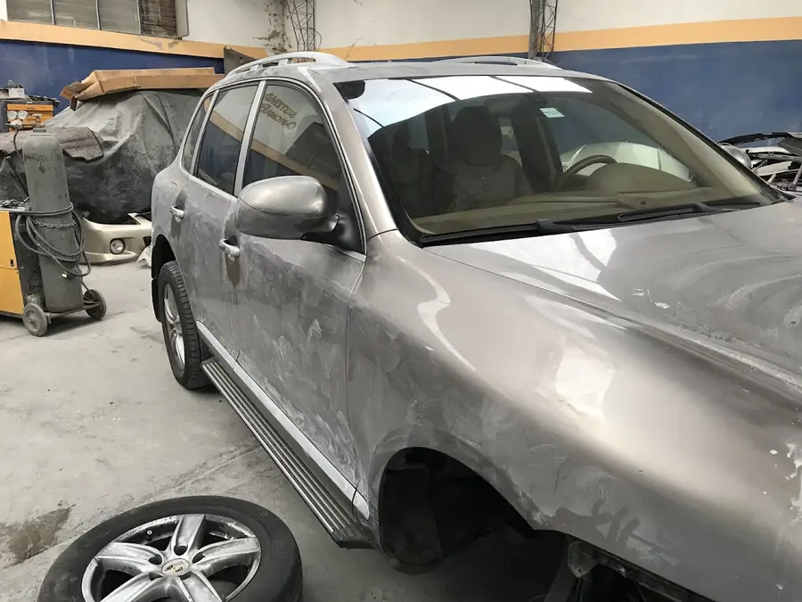
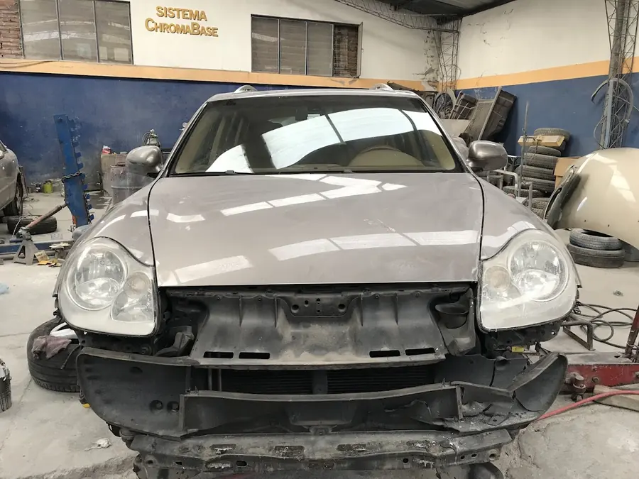
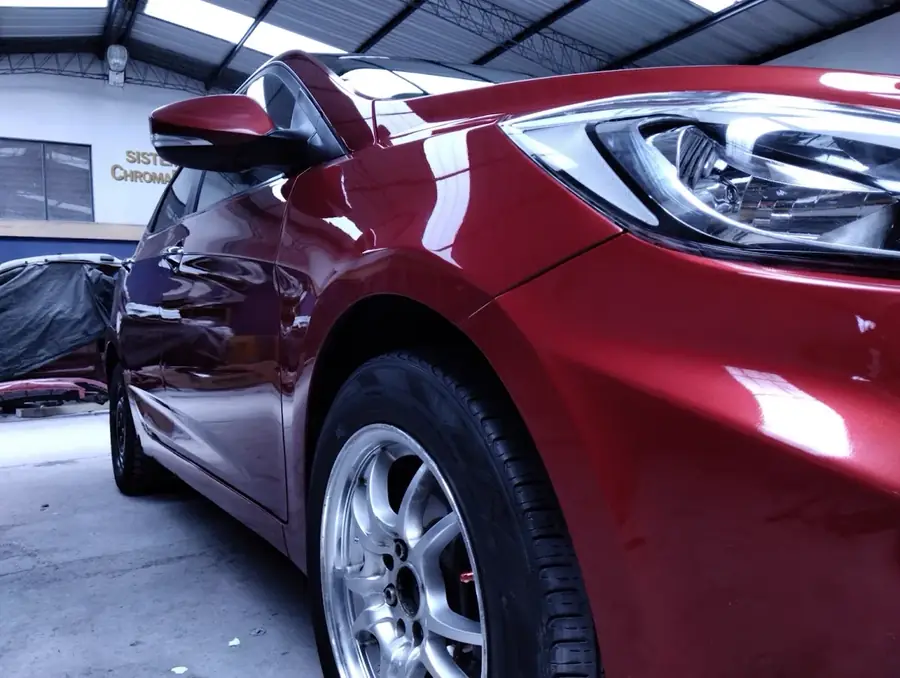
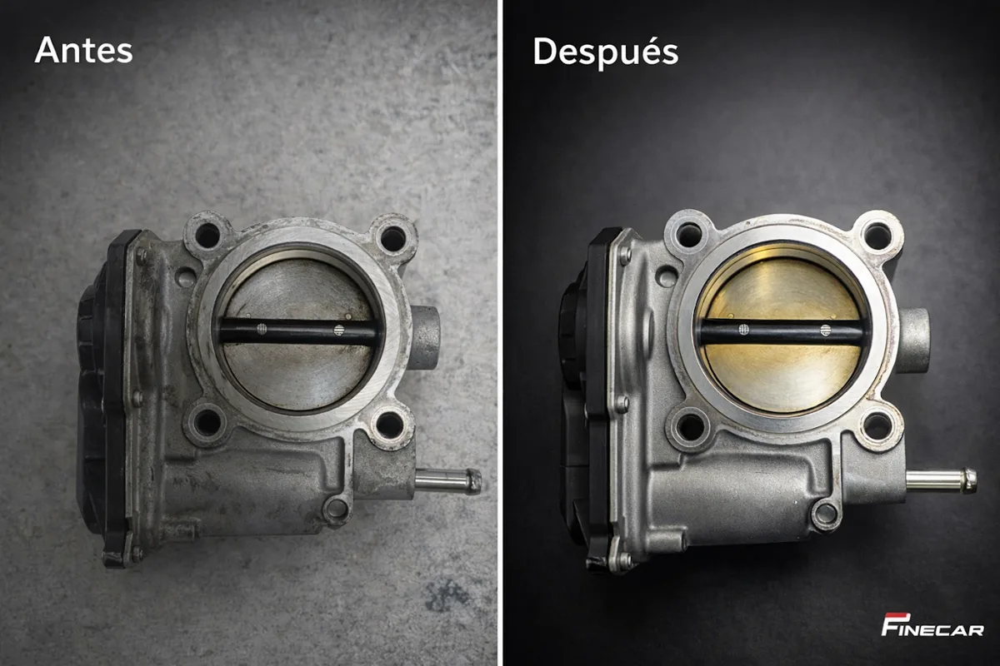
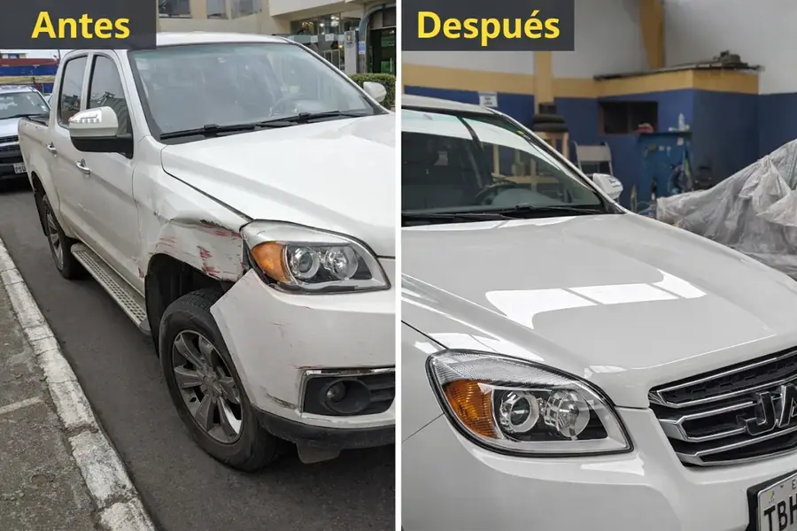
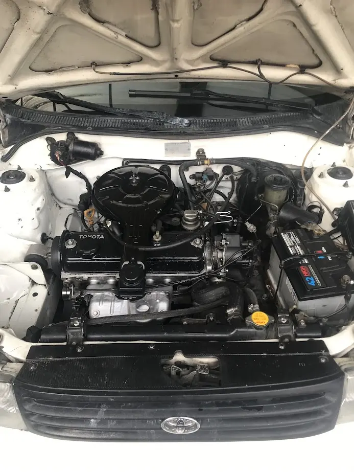
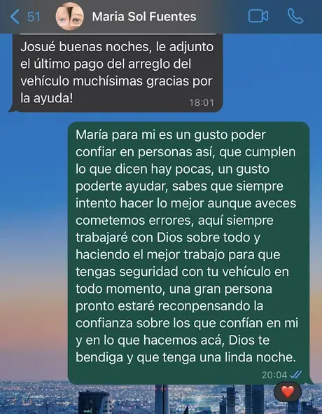
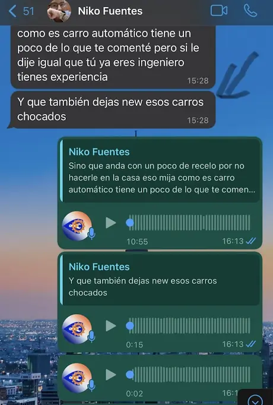

Trabajos reales Imágenes del proceso y resultado, no fotografías genéricas de internet.
Taller automotriz en Ambato
Taller de enderezada, pintura y mecánica automotriz en Ambato.
Diagnóstico claro antes de reparar: te ayudamos a evitar trabajos innecesarios en choques, pintura, frenos, suspensión y mantenimiento en Huachi Chico.
Primero revisamos el caso. Luego te explicamos qué conviene reparar, pintar o descartar antes de comenzar.
- Servicio principal
- Choques y pintura
- Zona
- Huachi Chico, Ambato
- Garantía
- Hasta 2 años en pintura
Cotización inicial
Antes de dejar tu auto en cualquier taller de Ambato, pide una revisión clara del daño.
Envía 3 fotos y cuéntanos qué pasó
Te orientamos sobre el siguiente paso: reparación de golpe, pintura de pieza, pulido, mantenimiento o inspección presencial.
Quiero una orientación
Taller real, no stock
Confianza visual antes de pedirte que vengas al taller.
En reparación automotriz, la confianza se gana mostrando el trabajo. Por eso la web prioriza fotos reales de vehículos atendidos, ubicación verificable y contacto directo con FINECAR Bodyshop.

Proceso visible El cliente puede revisar acabados, pintura y detalles antes de decidir. Empresa local
Dirección, teléfonos, mapa y WhatsApp conectados para validar que el taller existe.
Empresa local
Dirección, teléfonos, mapa y WhatsApp conectados para validar que el taller existe.
Problemas que solucionamos
Si tu vehículo tiene un golpe, rayón o falla, te ayudamos a decidir el siguiente paso.
Primero revisamos el caso, te explicamos qué necesita el vehículo y te orientamos antes de comenzar cualquier trabajo. La prioridad es carrocería y pintura; mantenimiento y mecánica general quedan como segunda línea de servicio.
Lo que recibes
Una ruta simple para reparar tu vehículo con más seguridad.
Revisamos fotos del golpe, rayón o daño de pintura para orientarte sin hacerte perder tiempo.
Te indicamos si conviene enderezar, pintar, pulir, reemplazar o revisar presencialmente.
Trabajamos color, brillo, ajuste y detalle para que puedas revisar el resultado antes de la entrega.
En pintura ofrecemos garantía de hasta 2 años según el tipo de trabajo realizado.
Reparación de choques
Recuperamos la forma, ajuste y apariencia de tu vehículo después de un golpe.
Evaluamos el daño visible, la alineación de piezas y el estado de la pintura para definir una reparación ordenada. Puedes enviar fotos por WhatsApp o agendar una inspección cuando el daño necesite revisión presencial.
Enderezada de chasis
Corrección de piezas afectadas por golpes, roces o deformaciones en vehículos chocados.
Carrocería
Reparación de guardachoques, puertas, capó, compuertas y paneles.
Aluminio
Enderezado de piezas de aluminio cuando la reparación es viable.
Rayones, abolladuras y compactos
Evaluación para definir si conviene reparar, pulir o pintar la pieza.
Pintura automotriz
Pintura de piezas con igualación de color, brillo y acabado profesional.
Realizamos pintura de piezas al mismo color, brillo directo, pintura con barniz, tricapa para vehículos modernos, perlados y acabados mate. En la rama de pintura ofrecemos garantía de hasta 2 años según el trabajo realizado.
Pintura de autos en Ambato Igualación de color y acabado según el vehículo.
Acabados especiales Brillo directo, barniz, tricapa, perlados y mate.
Clínica de rayones Evaluación para pulido, retoque o pintura.
Pulido y protección Cerámica, carnauba y tratamientos desde 3 meses.
Pintura de aros Renovación estética según condición de la pieza.
Trabajos realizados
Antes y después para evaluar resultados con claridad.
Mira trabajos reales de Finecar y envía fotos de tu vehículo para recibir una orientación inicial antes de agendar una inspección en el taller.

Reparación y pintura
Proceso visual para comparar el antes y el después.

Pintura automotriz
Corrección de color, acabado y detalles de carrocería.

Mantenimiento
Servicios preventivos y correctivos según evaluación.

Antes y después
Evidencia real para revisar el tipo de acabado.

Acabados de pintura
Atención a brillo, color y presentación final.

Revisión y detalle
Trabajo documentado para decidir con más confianza.
Si tu vehículo tiene un golpe, rayón o daño de pintura, envía fotos claras por WhatsApp.
Enviar fotos por WhatsAppCasos reales
Problema, decisión y resultado visible.
Recuperar forma y ajuste antes de pintar.
Primero se revisa el daño, la alineación de piezas y qué conviene reparar. Luego se define si la pieza necesita enderezada, pintura o reemplazo.
Ver enderezada y pinturaDiagnóstico antes de cambiar piezas.
En frenos, suspensión o motor, el objetivo es identificar el origen del problema para evitar gastos innecesarios.
Ver mecánica generalColor, brillo y acabado revisables.
Se evalúa si conviene pulir, retocar o pintar la pieza completa según profundidad del daño y estado del acabado.
Cotizar pintura

Caso documentado
Motor atendido con evidencia visual.
Las fotos antes/después ayudan a que el cliente vea el trabajo realizado y entienda por qué una revisión previa es importante.
Guía gratuita
Recibe una guía de mantenimiento para alargar la vida de tu motor.
Escríbenos por WhatsApp y te enviamos una guía práctica con revisiones básicas, señales de alerta y cuidados útiles para manejar en Ambato.
Ayuda mecánica
Respuestas rápidas a problemas comunes del carro.
¿Por qué mi carro vibra al frenar?
Puede ser desgaste irregular, discos afectados, suspensión o neumáticos. Te explicamos cuándo revisar.
Leer guía¿Qué significa la luz de Check Engine?
No siempre es una emergencia, pero sí conviene diagnosticar antes de que el problema crezca.
Leer guíaCuándo hacer mantenimiento preventivo.
Una rutina simple ayuda a evitar fallas caras en motor, frenos, suspensión y fluidos.
Leer guíaMantenimiento preventivo
Servicio para cuidar el rendimiento y evitar fallas mayores.
Atendemos cambios de aceite, filtros, fluidos, frenos, suspensión, ABC de motor, revisión general y mantenimiento correctivo cuando el vehículo presenta fallas. Esta línea complementa nuestro trabajo principal de carrocería y pintura.
Consultar mantenimientoMecánica general
Diagnóstico, frenos, suspensión, motor y sistemas eléctricos básicos.
Limpieza de inyectores
Servicio orientado a recuperar funcionamiento y respuesta del motor.
Importante
No ofrecemos servicio de cajas automáticas.
Proceso de trabajo
De las fotos por WhatsApp a la entrega del vehículo.
Un proceso simple para que sepas qué necesita tu auto, qué se va a reparar y cuando conviene revisarlo directamente en el taller.
Envías fotos
Muestras el golpe, rayón o falla para recibir una orientación inicial por WhatsApp.
Revisamos el caso
Te indicamos si se puede orientar con fotos o si conviene una inspección presencial.
Definimos el trabajo
Explicamos el alcance de la reparación, pintura o mantenimiento antes de comenzar.
Reparamos y entregamos
Trabajamos lo autorizado y revisamos acabado, ajuste y detalles antes de la entrega.
El primer paso puede ser una foto clara del daño.
Enviar fotos por WhatsAppPor qué elegir Finecar
Un taller en Ambato enfocado en reparar con criterio y explicar el trabajo con claridad.
FINECAR atiende a conductores que necesitan resolver choques, pintura, rayones o mantenimiento sin procesos confusos. Antes de comenzar, buscamos que entiendas qué se va a hacer y por qué.
Testimonios reales
Mensajes de clientes que ya confiaron en el taller.




Preguntas frecuentes
Antes de cotizar
Cómo puedo cotizar una reparación de choque?
Envía fotos del daño por WhatsApp e indica marca, modelo y año del vehículo. Si hace falta, se coordina una revisión presencial.
Qué fotos debo enviar?
Envía una foto general del vehículo, una foto cercana del daño y otra desde un ángulo lateral para ver profundidad, forma y piezas afectadas.
La pintura tiene garantía?
La rama de pintura puede tener garantía de hasta 2 años según el tipo de trabajo realizado.
Atienden solo en Ambato?
FinecarBodyShop atiende Ambato y alrededores.
Hacen mantenimiento y mecánica?
Si, hacemos mantenimiento preventivo, correctivo y mecánica general. No ofrecemos servicio de cajas automáticas.
Contacto
Cotiza tu reparación o agenda una revisión.
Atendemos en Ambato, en Cervantes y Río Cosanga, sector Huachi Chico.
- WhatsApp: 0995556084
- Teléfono adicional: 0995318519
- Teléfono fijo: (03) 2844-271
- Horario: lunes a viernes 8:30 am a 6:00 pm; sábados 8:30 am a 2:00 pm
- Ubicación: Ver en Google Maps
- TikTok: @josulopez6
FinecarBodyShop